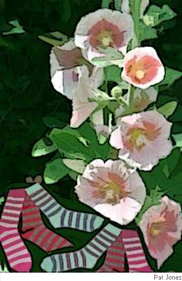

Jim Hayes
The Relic
Said Alfred’s Mom “Don’t touch the box
beneath the bed, it’s only socks.”
But Alfie’s little prying eyes
peeked, and saw to his surprise,
within a casket lying there
were locks of combed familiar hair,
parted, trimmed until they matched,
complete with daddy’s head attached.
Confronted, Mom said with a sniff,
“Oh I so loved his little quiff,
and wishing for a relic, tried
to cut a lock off when he died.
I couldn’t find a knife or handsaw,
nor scissors, cleaver, butcher’s band-saw,
and so, in order to detach it,
I was obliged to use a hatchet.”
“You know,” continued Alfie’s mother,
“How one thing leads into another.”
The arms with which he used to squeeze her
she’d wrapped and put into the freezer.
His stomach (once it was deflated)
also was refrigerated.
She took some private bits and burned them,
saved the ashes, sieved, then urned them
(His other parts she stored in socks
to fertilise her hollyhocks).
“You’ll think it odd dear,” Mom explains;
“I don’t know where he kept his brains —
“I looked, but found, as Grandpa said,
he hadn’t any in his head”.
So now, when Al gets mushy peas, he
wonders, and feels rather queasy.

|